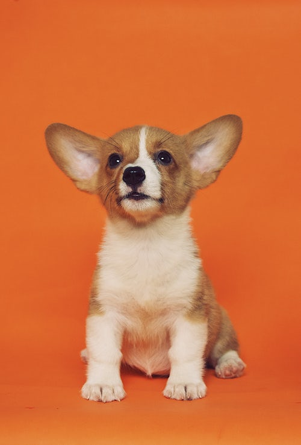

개(학명: Canis lupus familiaris)는 식육목 개과 개속에 속하는 동물로, 회색늑대(Canis lupus)의 아종으로, [1] 현대에서 가장 널리 분포하며 개체 수가 가장 많은 지상 육식 동물이다. [2][3][4][5][6] 개는 인류가 최초로 가축으로 삼은 동물로 알려져 있으며[7], 역사적으로 애완견, 사냥견으로서 길러 왔으며 인간의 친구(Man's best friend)라고도 불린다.
 미토콘드리아 DNA 분석 결과 현대의 개와 회색늑대는 대략 10만 년 전에 분화된 것으로 추정되어 왔는데, 2013년 개의 화석을 이용한 분석에서는 33,000 - 36,000년 전 사이에 분화가 이루어 졌을 것으로 보고 있다.[7][8]